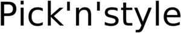

Trade Mark Journal No.2025/027 4 July 2025
WO0000001859286 (3,35,39,41,44)
Office of origin: Poland
Date of International Registration:3 January 2025
Date of designation in the UK:
3 January 2025

Word mark consisting of the words: Pick'n'style.
- Class 3
- Shampoos, conditioners, hair perming solutions and permanent wave solutions, hair lighteners, hydrogen peroxide solutions, hair styling products, lotions, aloe vera-based cosmetic products, body lotions, beard balms, aftershave balms, hair balms, smoothing and straightening hair balms, nail foundation base, hair pomade, nail polishes, body emulsions, depilatory emulsions, nail strengthening emulsions, hair dyes, henna for cosmetic purposes, adhesives for attaching artificial nails, nail hardening glue, cosmetic hairdressing preparations, cosmetic hair lotions, cosmetic body scrubs, cosmetics, nail cosmetics, hair cosmetics, cosmetics containing keratin, face creams, hand creams, hair creams, nail creams, night creams, day creams, hairstyling setting creams, hair care creams, protective creams, lacquer for cosmetic purposes, nail polishes, hair sprays, nail topcoats, hair care masks, hair mascara, moisturizing masks, hair masks, cleansing masks, face and body masks, hair styling masks, cosmetic masks, face and body butters, materials for nail coatings, soaps, soap bars, cosmetic milks, non-medicated hair lotions, non-medicated shampoos, nail strengthening conditioners, hair conditioners, nail conditioners, cuticle conditioners, nourishing hair wax, cosmetic oils, hair oils, hair nourishing oils, bath oils for hair care, hair styling mousses, protective hair mousses, hair rinses, hair perming solutions, strengthening hair treatment solutions, hair care solutions, hair styling solutions, permanent wave solutions, hair styling solutions, body and hair solutions, hair coloring solutions, protective hair solutions, hair care solutions, hair pomades, nail primers, hair dyeing preparations, hair treatment preparations, nail treatment preparations, hair curling preparations, hair coloring preparations, makeup removers, hair washing preparations, hair neutralizing preparations, sun protection hair preparations, cold wave preparations, hair lightening preparations, hair straightening preparations, hair care preparations, skin care preparations, nail care preparations, permanent wave preparations, hair styling preparations, nail strengthening preparations, permanent wave kits, nail polish removers, body gels, hair styling gels, hairstyle setting gels, hair gels, nail gels, shower gels, hair styling waxes, hydrogen peroxide for hair, nail hardeners, tonics, hair shampoos, dry shampoos, color-depositing shampoos, cuticle softeners, moisturizers, cleansing agents, hair lightening agents, detangling products, gel nail removers, permanent wave agents, streak lightening products, hair care products, hair moisturizing products, hair serum, hair styling serum, hair care serum, cosmetic serums, hair lighteners, products for caring for colored hair, hair dye removers, nourishing hair preparations, hair shine enhancers, hair smoothing and straightening preparations, hair setting products, cosmetic products for preventing hair loss, hair drying products for cosmetic use, hair styling products for men.
- Class 35
- Operating wholesale and retail outlets, including import agency services, for the following products: hair dryers, scissors, thinning scissors, and hairdressing accessories, protective aprons, capes, caps, washing units, chairs, stools, trolleys, mousses, hair sprays, hair dyes, styling products, and hair care products; organizing exhibitions and shows in hairdressing and cosmetology for commercial or advertising purposes; distribution of advertising materials; marketing; press and online advertising; sales agency and representative services for domestic and international business entities, related to: product catalogs, mail-order and online orders, manual, electric, and non-electric hairdressing equipment, cosmetic products, equipment for hairdressing and beauty salons, promotional, training, and advertising materials; administration and organization of mail-order sales services; organizing fairs and exhibitions; distribution of advertising announcements; distribution of promotional materials; advertising, marketing, and promotional services; distribution of samples for advertising purposes; organization and execution of promotional events; advertising services for cosmetic products; organizing loyalty programs for commercial, promotional, or advertising purposes.
- Class 39
- Distribution of hairdressing and cosmetic products.
- Class 41
- Educational services related to cosmetic therapy.
- Class 44
- Hairdressing salons, beauty salons, cosmetic salons: provision of services by beauty salons, cosmetic services, beauty treatments, consultations on cosmetics, cosmetic advice, facial treatments, body treatments, hair treatments, men's hairdressing services, cosmetic laser treatments for hair growth, laser skin rejuvenation services, cosmetic laser varicose vein removal, laser hair removal services, cosmetic laser hair removal, laser removal of spider veins, cosmetic laser skin treatments, laser cosmetic treatments for spider veins, laser varicose vein removal, weight loss consultancy services, waxing, tanning salon and sunbed services, body, face, and hair cosmetic treatments, hair cosmetic treatments, therapeutic body treatments, therapeutic face treatments, facial cosmetic treatments, body cosmetic treatments, beauty care treatments, hair removal treatments, cosmetic procedures, cosmetic body care services, cosmetic analysis services for determining the most appropriate cosmetics to be used with a person's face shape and skin tone, cosmetic services, cosmetic and plastic surgery services, cosmetic makeup services, services of cosmetic and plastic surgery clinics.
PICK'N'STYLE POLAND SP. Z O.O. (LLC)
Representative: KATARZYNA GODYŃ-BRZOSTEK, MIKOŁAJA KOPERNIKA STREET 4/3, PL-40-064 KATOWICE, POLAND